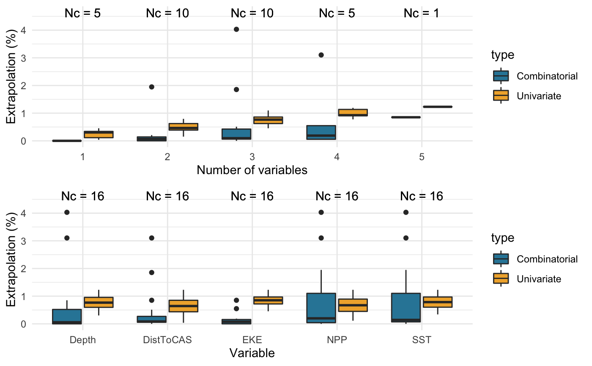

extrapolation_analysis.RdPerforms a complete evaluation of both univariate (Type I) and combinatorial (Type II) extrapolation in density surface models of line transect data, by calling relevant functions from dsmextra. As such, arguments extrapolation_analysis mirror those of the individual functions from which they are taken:
compare.arguments | Arguments from compare_covariates |
nearby.arguments | Arguments from compute_nearby |
map.arguments | Arguments from map_extrapolation |
extrapolation_analysis( samples, covariate.names, prediction.grid, coordinate.system, summarise.extrapolation = TRUE, compare.covariates = FALSE, compare.extrapolation.type = "both", compare.n.covariates = NULL, compare.create.plots = FALSE, compare.display.percent = TRUE, nearby.compute = TRUE, nearby.nearby = 1, nearby.max.size = 1e+07, nearby.no.partitions = 10, map.generate = TRUE, map.sightings = NULL, map.tracks = NULL )
| samples | Sample (reference) dataset used for model building and calibration. This corresponds to the |
|---|---|
| covariate.names | Character string. Names of the covariates of interest. |
| prediction.grid | Prediction data.frame. This contains both geographic coordinates ( |
| coordinate.system | Projected coordinate system relevant to the study location. Can be either a character string or an object of class |
| summarise.extrapolation | Logical. If TRUE, prints a summary of extrapolation to the R console. |
| compare.covariates | Logical. If TRUE, run |
| compare.extrapolation.type | Character string indicating the type of extrapolation to be assessed. One of |
| compare.n.covariates | Integer. Maximum number of covariates. The function will compare all combinations of 1 to |
| compare.create.plots | Logical, defaults to |
| compare.display.percent | Logical, defaults to |
| nearby.compute | Logical. If TRUE, run |
| nearby.nearby | Scalar indicating which reference data points are considered to be 'nearby' (i.e. withing ‘nearby’ mean geometric Gower's distances of) prediction points. Defaults to 1. |
| nearby.max.size | Minimum size threshold for partitioning computations. Calculated as |
| nearby.no.partitions | Integer. Number of desired partitions of the data (default of 10). |
| map.generate | Logical. If TRUE, run |
| map.sightings | Species observations (optional). Can be supplied as a |
| map.tracks | Survey tracks (optional). Can be supplied as a |
Bouchet PJ, Miller DL, Roberts JJ, Mannocci L, Harris CM and Thomas L (2019). From here and now to there and then: Practical recommendations for extrapolating cetacean density surface models to novel conditions. CREEM Technical Report 2019-01, 59 p. https://research-repository.st-andrews.ac.uk/handle/10023/18509
Mesgaran MB, Cousens RD, Webber BL (2014). Here be dragons: a tool for quantifying novelty due to covariate range and correlation change when projecting species distribution models. Diversity & Distributions, 20: 1147-1159. DOI: 10.1111/ddi.12209
library(dsmextra) # Load the Mid-Atlantic sperm whale data (see ?spermwhales) data(spermwhales) # Extract the data segs <- spermwhales$segs predgrid <- spermwhales$predgrid # Define relevant coordinate system my_crs <- sp::CRS("+proj=aea +lat_1=38 +lat_2=30 +lat_0=34 +lon_0=-73 +x_0=0 +y_0=0 +datum=WGS84 +units=m +no_defs +ellps=WGS84 +towgs84=0,0,0") # Define covariates of interest my_cov <- c("Depth", "DistToCAS", "SST", "EKE", "NPP") spermw.analysis <- extrapolation_analysis(samples = segs, covariate.names = my_cov, prediction.grid = predgrid, coordinate.system = my_crs, summarise.extrapolation = TRUE, compare.covariates = TRUE, compare.extrapolation.type = "both", compare.n.covariates = NULL, compare.create.plots = TRUE, compare.display.percent = TRUE, nearby.compute = TRUE, nearby.nearby = 1, nearby.max.size = 1e7, nearby.no.partitions = 10, map.generate = TRUE)#>#>#>#> #>#>#>#>#>#>#> #> #> Extrapolation Minimum n_min Maximum n_max #> -------------- ----------------- ------ -------------------------------- ------ #> Univariate DistToCAS 2 Depth, DistToCAS, SST, EKE, NPP 65 #> Combinatorial Depth 0 Depth, SST, NPP 213 #> DistToCAS 0 - - #> SST 0 - - #> EKE 0 - - #> NPP 0 - - #> Depth, DistToCAS 0 - - #> Depth, EKE 0 - - #> DistToCAS, NPP 0 - - #> EKE, NPP 0 - - #> Depth, SST, EKE 0 - - #> Depth, EKE, NPP 0 - - #> Both DistToCAS 2 Depth, SST, NPP 252#> #>#>#>#>#>#>#>#> #>#> Warning: Discarded ellps WGS 84 in CRS definition: +proj=merc +a=6378137 +b=6378137 +lat_ts=0 +lon_0=0 +x_0=0 +y_0=0 +k=1 +units=m +nadgrids=@null +wktext +no_defs +type=crs#> Warning: Discarded datum World Geodetic System 1984 in CRS definition#> Warning: Discarded ellps WGS 84 in CRS definition: +proj=merc +a=6378137 +b=6378137 +lat_ts=0 +lon_0=0 +x_0=0 +y_0=0 +k=1 +units=m +nadgrids=@null +wktext +no_defs +type=crs#> Warning: Discarded datum World Geodetic System 1984 in CRS definition#> Warning: input and ouput crs are the same#> Warning: input and ouput crs are the same#> Warning: input and ouput crs are the same#> Warning: Discarded ellps WGS 84 in CRS definition: +proj=merc +a=6378137 +b=6378137 +lat_ts=0 +lon_0=0 +x_0=0 +y_0=0 +k=1 +units=m +nadgrids=@null +wktext +no_defs +type=crs#> Warning: Discarded datum World Geodetic System 1984 in CRS definition#> Warning: Discarded ellps WGS 84 in CRS definition: +proj=merc +a=6378137 +b=6378137 +lat_ts=0 +lon_0=0 +x_0=0 +y_0=0 +k=1 +units=m +nadgrids=@null +wktext +no_defs +type=crs#> Warning: Discarded datum World Geodetic System 1984 in CRS definition#> Warning: Discarded ellps WGS 84 in CRS definition: +proj=merc +a=6378137 +b=6378137 +lat_ts=0 +lon_0=0 +x_0=0 +y_0=0 +k=1 +units=m +nadgrids=@null +wktext +no_defs +type=crs#> Warning: Discarded datum World Geodetic System 1984 in CRS definition#> Warning: map_extrapolation relies on the leaflet package, which is built around a Web Mercator projection (EPSG:3857), and therefore requires rasters to be reprojected for plotting. As a result, minor discrepancies may occur between the interactive maps shown in the viewer, and the underlying raw data. The latter can be accessed directly from the extrapolation.values or gower.values objects and visualised using alternative packages such as ggplot2.#> Warning: Discarded ellps WGS 84 in CRS definition: +proj=merc +a=6378137 +b=6378137 +lat_ts=0 +lon_0=0 +x_0=0 +y_0=0 +k=1 +units=m +nadgrids=@null +wktext +no_defs +type=crs#> Warning: Discarded datum World Geodetic System 1984 in CRS definition#> Warning: Discarded ellps WGS 84 in CRS definition: +proj=merc +a=6378137 +b=6378137 +lat_ts=0 +lon_0=0 +x_0=0 +y_0=0 +k=1 +units=m +nadgrids=@null +wktext +no_defs +type=crs#> Warning: Discarded datum World Geodetic System 1984 in CRS definition#> Warning: Discarded ellps WGS 84 in CRS definition: +proj=merc +a=6378137 +b=6378137 +lat_ts=0 +lon_0=0 +x_0=0 +y_0=0 +k=1 +units=m +nadgrids=@null +wktext +no_defs +type=crs#> Warning: Discarded datum World Geodetic System 1984 in CRS definition#> Warning: map_extrapolation relies on the leaflet package, which is built around a Web Mercator projection (EPSG:3857), and therefore requires rasters to be reprojected for plotting. As a result, minor discrepancies may occur between the interactive maps shown in the viewer, and the underlying raw data. The latter can be accessed directly from the extrapolation.values or gower.values objects and visualised using alternative packages such as ggplot2.#> Warning: Discarded ellps WGS 84 in CRS definition: +proj=merc +a=6378137 +b=6378137 +lat_ts=0 +lon_0=0 +x_0=0 +y_0=0 +k=1 +units=m +nadgrids=@null +wktext +no_defs +type=crs#> Warning: Discarded datum World Geodetic System 1984 in CRS definition#> Warning: Discarded ellps WGS 84 in CRS definition: +proj=merc +a=6378137 +b=6378137 +lat_ts=0 +lon_0=0 +x_0=0 +y_0=0 +k=1 +units=m +nadgrids=@null +wktext +no_defs +type=crs#> Warning: Discarded datum World Geodetic System 1984 in CRS definition#> Warning: Discarded ellps WGS 84 in CRS definition: +proj=merc +a=6378137 +b=6378137 +lat_ts=0 +lon_0=0 +x_0=0 +y_0=0 +k=1 +units=m +nadgrids=@null +wktext +no_defs +type=crs#> Warning: Discarded datum World Geodetic System 1984 in CRS definition#> Warning: map_extrapolation relies on the leaflet package, which is built around a Web Mercator projection (EPSG:3857), and therefore requires rasters to be reprojected for plotting. As a result, minor discrepancies may occur between the interactive maps shown in the viewer, and the underlying raw data. The latter can be accessed directly from the extrapolation.values or gower.values objects and visualised using alternative packages such as ggplot2.#> #>